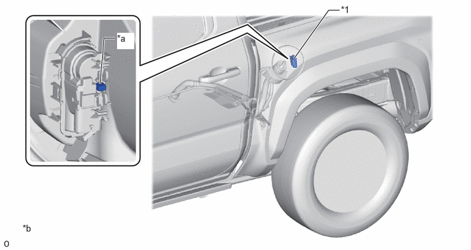

| Last Modified: 10-07-2025 | 6.11:8.1.0 | Doc ID: NM100000002K3GT |
| Model Year Start: 2024 | Model: Tacoma HV | Prod Date Range: [03/2024 - ] |
| Title: T24A-FTS (EMISSION CONTROL): EVAPORATIVE EMISSION CONTROL SYSTEM (for 1Motor-HEV Model): FUEL LID INTERLOCK; 2024 - 2026 MY Tacoma HV [03/2024 - ] | ||
FUEL LID INTERLOCK
CONSTRUCTION
(a) The fuel lid courtesy switch, which is in the fuel lid lock with motor assembly, determines whether the fuel filler door is open or closed by way of the state of the switch. When the door is open, the switch will be on. When the door is closed, the switch will be off.
(b) If the fuel lid does not open due to a malfunction in this mechanism, the fuel lid can be opened by operating (pushing) the emergency opener from underside the fuel lid.
|
*1 |
Fuel Lid with Motor Lock Assembly |
- |
- |
|
*a |
Emergency Opener |
- |
- |
CAUTION:
Do not operate the emergency opener when the fuel lid opener is working properly. If the fuel filler is opened using the emergency opener, the ECM will not open the fuel vapor-containment valve, and the pre-release of the internal fuel tank assembly pressure will not take place. Therefore, the internal pressure of the fuel tank assembly may remain high. Opening the fuel cap or refueling the fuel tank assembly in this state could cause fuel to overflow from the filler inlet. For this reason, be extremely careful when opening the fuel cap or refueling.